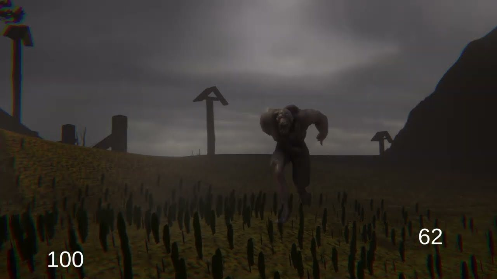
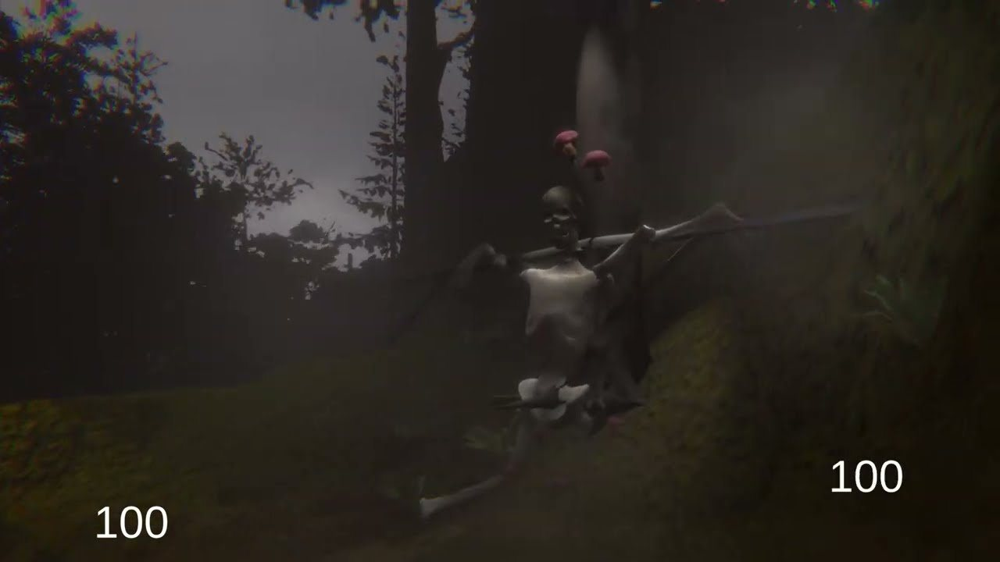
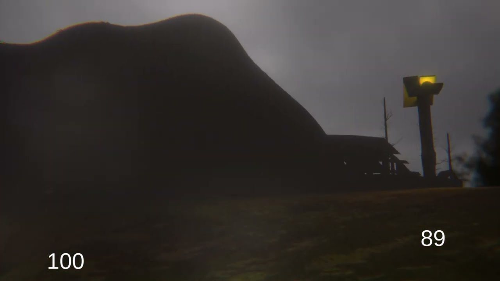

Projects / FPP Horror
SoloFPP Horror
Real fear from as few systems as possible. A short first-person survival horror game, inspired by Outlast, built alone from the first idea to a finished build.
- My role
- Everything, solo
- Timeline
- February 2022 to February 2023
- Platform
- PC
- Engine
- Unity
In short
What it is, and what I did on it
The game
The environment reacts to the player and draws them toward the next checkpoint, so the place itself tells the story.
My part
Concept to a finished build on my own: AI, level design, audio, lighting and optimisation.
What it gave me
A deep working knowledge of Unity's tools, and a year of practice at managing my own scope, time and motivation.
Iteration
The same level, reworked three times
Each pass came from what testing showed was wrong.
- First version
It was not tense
Parts of the terrain could not be walked on and there was almost no ambient sound, so the level did not hold any suspense.
Level overview, first versionBefore the rework. - Second pass
15% faster
Smaller textures and occlusion culling brought a 15% performance gain. Testing feedback decided what changed.
Level overview, second passAfter the first round of changes. - Final pass
60% faster
Reworked terrain and camera settings, together with batching and GPU instancing, took the gain to 60%.
After optimisationThe final version of the level. PerformanceWhat the optimisation changed. Read the full storyShow less1 min read
What was changed
- Texture sizes brought down
- Occlusion culling, so hidden parts of the level are not drawn
- Terrain reworked
- Camera settings tuned
- Batching and GPU instancing for repeated objects
The frame rate
Before the work the level ran at about 30 to 50 frames a second, and after the final pass well above that.
What it did for the game
The gains were not only technical. A steadier frame rate kept the suspense from breaking and made the walk through the level smoother.
Hands-on
What I built
Interactive sequences. Scenes built in Unity Timeline that respond to what the player does.
Atmosphere. Post-processing, lighting and weather effects that carry the suspense.
Enemy AI. An enemy that adapts to how the player behaves. It can be seen hunting the player in the gameplay video at the top of this page.
Audio. Separate mixers for effects, ambience and music, with compression that keeps performance up without losing clarity.



Contact